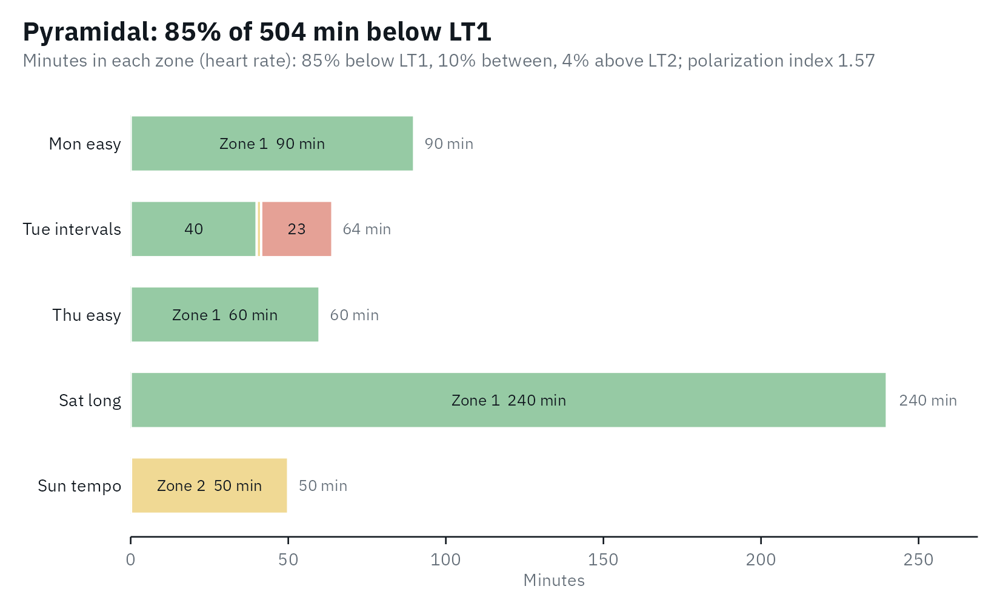

A step test gives the zones; training happens between tests.
training_load() sorts the heart-rate, power or speed
samples of training sessions into the zones of
lactate_zones() and answers two questions: how much time
was spent in each zone, and how was the training spread across the
intensity domains?
Zones from a test
The second test of the cyclist in lactate_tests, with
LT1 at Log-log and LT2 at ModDmax:
library(lactater)
library(dplyr)
test <- lactate_tests |>
filter(test == "cycling_series_2")
results <- test |>
lactate_threshold(intensity, lactate, heart_rate, plot = FALSE)
zones <- lactate_zones(results, lt1 = "Log-log", lt2 = "ModDmax")
zones |>
select(zone, domain, intensity_from, intensity_to, heart_rate_from, heart_rate_to)
#> # A tibble: 3 × 6
#> zone domain intensity_from intensity_to heart_rate_from heart_rate_to
#> <chr> <chr> <dbl> <dbl> <dbl> <dbl>
#> 1 Zone 1 moderate NA 236 NA 156
#> 2 Zone 2 heavy 236 327 156 178
#> 3 Zone 3 severe 327 NA 178 NATime in zone
Any data frame with one row per sample works: a CSV exported from a heart-rate monitor, a bike computer or a training platform. Here is a made-up week of heart rate, one sample every 5 s:
set.seed(1)
session <- function(name, minutes, heart_rate) {
tibble(session = name, heart_rate = round(rnorm(minutes * 12, heart_rate, 3)))
}
week <- bind_rows(
session("Mon easy", 90, 135),
session("Tue intervals", 20, 140), session("Tue intervals", 24, 182), session("Tue intervals", 20, 140),
session("Thu easy", 60, 138),
session("Sat long", 240, 142),
session("Sun tempo", 50, 165)
)
week
#> # A tibble: 6,048 × 2
#> session heart_rate
#> <chr> <dbl>
#> 1 Mon easy 133
#> 2 Mon easy 136
#> 3 Mon easy 132
#> 4 Mon easy 140
#> 5 Mon easy 136
#> 6 Mon easy 133
#> 7 Mon easy 136
#> 8 Mon easy 137
#> 9 Mon easy 137
#> 10 Mon easy 134
#> # ℹ 6,038 more rowsEvery sample counts for interval seconds in the zone of
its value. With .by, each session gets its own row, in the
order the sessions appear:
training_load(week, zones, interval = 5, .by = "session")
#> # Training load: 5 groups, 8.4 h in 3 zones (heart rate)
#> # Distribution: pyramidal: 85% moderate, 10% heavy, 4% severe (polarization
#> # index 1.57)
#> session minutes zone_1 zone_2 zone_3 zone_1_percent zone_2_percent
#> <chr> <dbl> <dbl> <dbl> <dbl> <dbl> <dbl>
#> 1 Mon easy 90 90 0 0 100 0
#> 2 Tue intervals 64 40 1.4 22.6 62.5 2.2
#> 3 Thu easy 60 60 0 0 100 0
#> 4 Sat long 240 240 0 0 100 0
#> 5 Sun tempo 50 0.1 49.9 0 0.2 99.8
#> # ℹ 3 more variables: zone_3_percent <dbl>, polarization_index <dbl>,
#> # distribution <chr>Without .by, the whole week is one row. The header says
how the time was spread:
load <- training_load(week, zones, interval = 5)
load
#> # Training load: 1 group, 8.4 h in 3 zones (heart rate)
#> # Distribution: pyramidal: 85% moderate, 10% heavy, 4% severe (polarization
#> # index 1.57)
#> minutes zone_1 zone_2 zone_3 zone_1_percent zone_2_percent zone_3_percent
#> <dbl> <dbl> <dbl> <dbl> <dbl> <dbl> <dbl>
#> 1 504 430. 51.3 22.6 85.3 10.2 4.5
#> # ℹ 2 more variables: polarization_index <dbl>, distribution <chr>The plot shows the minutes in each zone per session, colored by domain like the zones, so a long session looks long; the shares of the whole are in its subtitle:
autoplot(training_load(week, zones, interval = 5, .by = "session"))
Five zones work the same way, and the distribution is still computed on the three domains:
five <- lactate_zones(results, lt1 = "Log-log", lt2 = "ModDmax", model = 5)
training_load(week, five, interval = 5)
#> # Training load: 1 group, 8.4 h in 5 zones (heart rate)
#> # Distribution: pyramidal: 85% moderate, 10% heavy, 4% severe (polarization
#> # index 1.57)
#> minutes zone_1 zone_2 zone_3 zone_4 zone_5 zone_1_percent zone_2_percent
#> <dbl> <dbl> <dbl> <dbl> <dbl> <dbl> <dbl> <dbl>
#> 1 504 33.2 397. 51.3 21.8 0.8 6.6 78.7
#> # ℹ 8 more variables: zone_3_percent <dbl>, zone_4_percent <dbl>,
#> # zone_5_percent <dbl>, moderate_percent <dbl>, heavy_percent <dbl>,
#> # severe_percent <dbl>, polarization_index <dbl>, distribution <chr>How the training was spread
The share of time in the moderate, heavy and severe domains is the training intensity distribution. Treff et al. (2019) proposed a polarization index to tell the common distributions apart:
polarization index = log10((moderate / heavy) * severe * 100)
with each domain as a fraction of the total time. A distribution is labeled:
- polarized when the index is above 2.00 and moderate > severe > heavy: much easy training, some hard, little in between;
- pyramidal when moderate > heavy > severe;
- threshold when the heavy domain holds the most time;
- high intensity when the severe domain holds the most time;
- other for anything else.
This week is pyramidal: 85% moderate, 10% heavy and 4% severe, with
an index of 1.57. The distribution describes a period of training, not
one session, so give training_load() all the sessions of
the period, for example with .by = "week". Treff et al. (2019)
note that a threshold distribution can also be pyramidal; the label is a
summary, not a diagnosis.
Heart rate or power?
Heart rate lags behind intensity: in short intervals it is still
rising when the interval ends, so time in zone from heart rate
under-counts the highest zones (Seiler, 2010). Power or
speed samples, with measure = "intensity", do not lag. Here
is one interval session, 6 x (3 min at 330 W, 3 min at 150 W), with a
heart rate that follows power with a delay (simulated, with a time
constant of 40 s):
power <- rep(rep(c(330, 150), each = 36), times = 6)
stages <- test |>
filter(intensity > 0)
steady <- approx(stages$intensity, stages$heart_rate, power, rule = 2)$y
heart_rate <- numeric(length(power))
heart_rate[1] <- 110
for (k in seq_along(power)[-1]) {
heart_rate[k] <- heart_rate[k - 1] + (steady[k] - heart_rate[k - 1]) * (1 - exp(-5 / 40))
}
intervals <- tibble(power = power, heart_rate = round(heart_rate))
by_power <- training_load(intervals, zones, column = "power", measure = "intensity", interval = 5)
by_heart_rate <- training_load(intervals, zones, interval = 5)
bind_rows(power = by_power, `heart rate` = by_heart_rate, .id = "samples") |>
select(samples, moderate = zone_1, heavy = zone_2, severe = zone_3)
#> # Training load: 2 groups, 0.6 h in 3 zones (intensity)
#> # Distribution: other: 50% moderate, 0% heavy, 50% severe (polarization index
#> # 3.39)
#> samples moderate heavy severe
#> <chr> <dbl> <dbl> <dbl>
#> 1 power 18 0 18
#> 2 heart rate 19.7 13.6 2.8The power samples put 18 minutes in the severe domain; the heart rate only 2.8. When power or speed is available, use it for interval sessions.
Why time in zone, and not a training impulse?
Training impulse (TRIMP) scores multiply the time spent at each heart rate or in each zone by a weight and add it up into one number. lactater reports the time in each zone instead: it is what the lactate zones measure directly, it keeps the distribution that a single number hides, and it needs no weights from outside the test. If you need a zone-based TRIMP, the minutes in each zone are what it is computed from.
References
Seiler S. What is best practice for training intensity and duration distribution in endurance athletes? Int J Sports Physiol Perform. 2010;5(3):276-91. doi:10.1123/ijspp.5.3.276
Treff G, Winkert K, Sareban M, Steinacker JM, Sperlich B. The polarization-index: a simple calculation to distinguish polarized from non-polarized training intensity distributions. Front Physiol. 2019;10:707. doi:10.3389/fphys.2019.00707